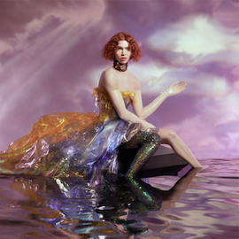
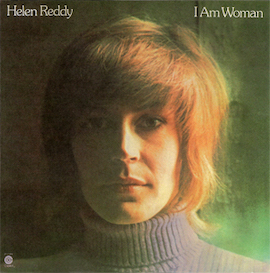
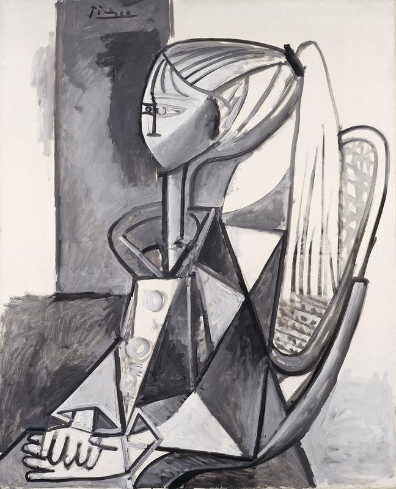

M A X C H E R R Y
sangaria

infatuation + immaterial ~ sophie

and i love you so ...
https://www.youtube.com/watch?v=LjHcHTJ8D5k
andre 3k x rick
social anxiety, 90% time alone, finding your voice, etc...

sylvette – picasso
kirari x ririka
if i dedicate to you
you're gonna be untrue
can you honestly say that you wouldn't
kali
https://nymag.com/news/features/high-school-2013-1/?imw=Y
Kurt Vonnegut wrote that high school “is closer to the core of the American experience than anything else I can think of.”
beautiful you – kelly chen (風花雪)